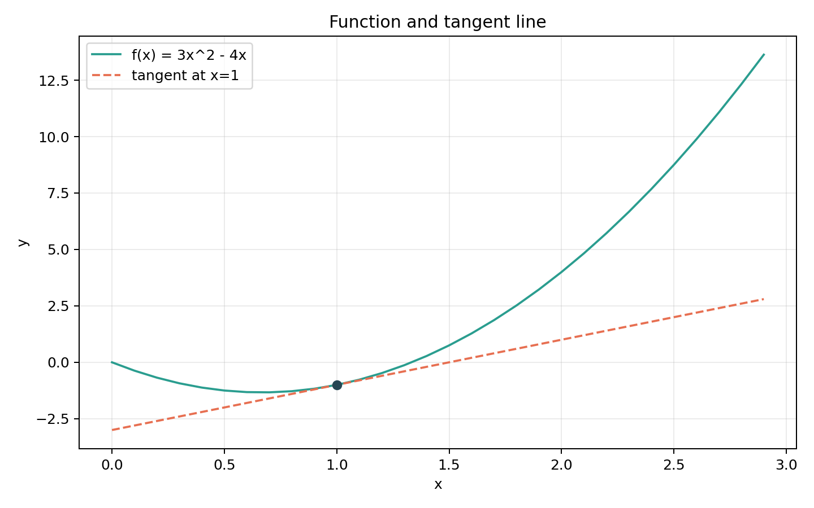

本周开始学习《动手学深度学习》第2章预备知识，使用PyTorch 2.5.1完成张量操作、广播、数据预处理、基础线性代数、数值导数、自动求导和概率抽样。它们看起来零散，实际会贯穿后面的每一次模型训练。
这篇复盘主要记录
- 张量与shape为什么是PyTorch代码的基础
- 广播怎样让不同形状的张量参与运算
- 按元素乘法、点积和矩阵乘法的区别
- backward、梯度累积和detach分别做什么
一、运行环境
本周使用Python 3.12.3和PyTorch 2.5.1 CPU版。环境检查结果为：
PyTorch版本：2.5.1+cpu
CUDA是否可用：False
可用GPU数量：0
本周使用设备：cpu第2章只有小规模张量计算，CPU足够。没有GPU不会妨碍理解广播、矩阵运算和自动求导，等到后面训练大型CNN时再评估速度。
二、张量是什么
可以先把张量理解成能放到CPU或GPU上计算的多维数字容器：一个数字是0维张量，一列数字是1维张量，表格是2维张量，很多张图片组成的批量通常是4维张量。
x = torch.arange(12)
X = x.reshape(3, 4)
print(X.shape) # torch.Size([3, 4])
print(X.numel()) # 12深度学习代码出错时，第一件事往往不是怀疑算法，而是检查每个张量的shape。
三、广播机制
广播允许两个形状不同但兼容的张量参与运算。例如一个3×1张量和一个1×2张量相加：
a = torch.arange(3).reshape(3, 1)
b = torch.arange(2).reshape(1, 2)
print(a + b)tensor([[0, 1],
[1, 2],
[2, 3]])可以把它想成把一列数字横向复印、把一行数字纵向复印，再进行逐元素相加。真正判断时要从最后一个维度向前比较：两个维度相等，或者其中一个等于1，才可以广播。
四、数据预处理
书中的小型房价数据包含数值缺失值和类别缺失值。本次先用房间数平均值填充数值列，再对巷道类型做独热编码，最终得到：
tensor([[3., 1., 0.],
[2., 0., 1.],
[4., 0., 1.],
[3., 0., 1.]])
输入形状：torch.Size([4, 3])这里的4表示4条样本，3表示处理后的3个输入特征。神经网络只能处理数值张量，因此文本类别必须先转换成数值表示。
五、三种“乘法”不能混在一起
| 写法 | 含义 | 主要要求 |
|---|---|---|
A * B | 对应位置逐元素相乘 | 形状相同或可以广播 |
torch.dot(x,y) | 两个向量的点积 | 两个一维向量长度相同 |
A @ B | 矩阵乘法 | A的列数等于B的行数 |
本次2×3矩阵乘3×4矩阵，输出形状为2×4。矩阵乘法不要求两个矩阵形状相同，真正匹配的是中间两个维度。
六、导数可以理解成局部斜率
对函数f(x)=3x²-4x，理论导数是f'(x)=6x-4，所以x=1时斜率为2。用很小的h计算差分：
(f(x+h)-f(x)) / h
当h=0.0001时，本次结果约为2.0003，与理论值2非常接近。

七、自动求导在做什么
训练神经网络需要知道损失函数对每个参数的梯度。手工推导大型网络很麻烦，PyTorch会在前向计算时记录运算关系，形成计算图；调用backward()后，再按链式法则反向计算梯度。
x = torch.arange(4.0, requires_grad=True)
y = 2 * torch.dot(x, x)
y.backward()
print(x.grad)因为y=2xᵀx，所以理论梯度是4x。本次结果为：
tensor([0., 4., 8., 12.])自动求导结果与理论值一致。后面训练模型时，损失函数的backward()也是同一件事，只是计算图更复杂。
八、为什么要清空梯度
PyTorch默认把新梯度累加到已有梯度中。如果连续调用两次反向传播而不清零，第二次看到的不是单独的新梯度，而是两次结果之和。因此训练循环通常包含：
optimizer.zero_grad()
loss.backward()
optimizer.step()第一行清空上一批数据留下的梯度，第二行计算当前梯度，第三行根据梯度更新参数。
九、detach是什么意思
detach()会得到一个共享数据但不继续记录当前计算关系的张量。若u=(x*x).detach()，之后计算z=u*x，反向传播时会把u当作常量，因此z对x的梯度等于u，而不会继续穿过u追溯到前面的x*x。
可以把计算图想成一张路线图，detach()相当于在某个位置告诉自动求导：“从这里往前不要再追了。”
十、概率实验
使用torch.multinomial模拟公平骰子。实验次数较少时频率波动很大；次数增加后，各点数频率逐渐接近理论概率0.167：
10次： [0.000, 0.000, 0.300, 0.400, 0.100, 0.200]
1000次： [0.168, 0.151, 0.182, 0.169, 0.160, 0.170]
10000次： [0.170, 0.165, 0.168, 0.165, 0.168, 0.164]这不是说实验一定会刚好等于1/6，而是试验次数增加后，经验频率通常会向理论概率靠近。
十一、与PDF代码不同的地方
- PDF生成于2021年，本次使用PyTorch 2.5.1和Python 3.12运行。
- 新版Pandas只对数值列填平均值，再对类别列单独做独热编码，避免旧写法的类型错误。
- 数据和输出文件按当前代码文件定位，直接运行时不会依赖PyCharm工作目录。
- Matplotlib作为可选依赖：没有安装时数值导数案例仍能运行，只跳过绘图。
- 本周基础案例不依赖
d2l工具包，所有关键步骤直接展示。
十二、目前还不熟的地方
- 复杂广播。简单的行列广播能理解，维度更多时还需要从右向左逐个判断。
- 矩阵形状。知道乘法规则，但看到多批次张量时还不能快速判断输出形状。
- 计算图。能运行backward和detach，复杂分支中的梯度流向还需要继续画图。
十三、下周计划
- 01线性回归原理
理解模型、平方损失、小批量和梯度下降。
- 02从零实现
手写数据迭代、模型、损失、SGD和训练循环。
- 03简洁实现
使用nn.Linear、DataLoader和torch.optim复现同一任务。
- 04开始分类
读取Fashion-MNIST，理解softmax、交叉熵和准确率。
十四、第十周最值得保留的认识
张量形状广播计算图梯度
数据以张量进入模型，运算是否合法首先取决于形状；广播可以扩展兼容维度；前向运算形成计算图，反向传播沿图计算梯度。这五个词会贯穿后面的所有模型。